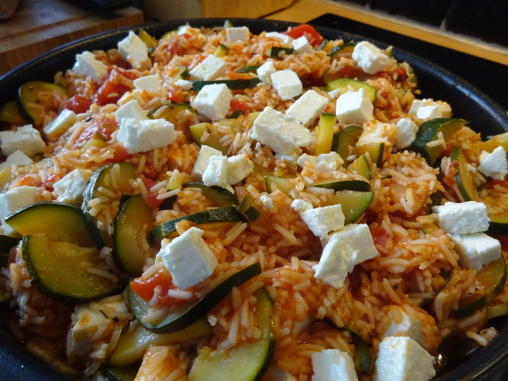

Zucchinipfanne mit Tomatenreis

- Zubereitung: ca. 20 Minuten
- Kochen: ca. 20 Minuten
- Für 4 Portionen
Zutaten
- 1 Zwiebel
- 4 EL Olivenöl
- 3 Zucchini
- 1 1/2 Tassen Rundkornreis
- 2 Tassen Gemüsebrühe
- Salz, Pfeffer
- Basilikum
- Oregano
- Rosmarin
- 200 g Schafskäse
- Cayennepfeffer
- 1 Dose Tomaten (ca. 800g)
Zubereitung
- In dem heißen Olivenöl die in kleine Würfel geschnittene Zwiebel kurz andünsten. Die Zucchini waschen, halbieren und in Scheiben schneiden. Zu dem Olivenöl-Zwiebel-Gemisch geben und eine Weile mit anbraten, bis die Zucchini ein bisschen Farbe haben.
- Den Reis zufügen und kurz anrösten, sodass alle Reiskörner mit einem Ölfilm umhüllt sind. Sparsam salzen, aber mit reichlich Pfeffer und Cayennepfeffer würzen. Die Dosentomaten grob zerkleinern und zugeben, mit der Brühe aufgießen und auf kleiner
Flamme etwa 20 Minuten köcheln lassen, bis die Brühe verkocht und der Reis gar ist.
- Zum Schluss die Kräuter zugeben (getrocknete Kräuter schon zu Beginn der Kochzeit zugeben). Den in Würfel von etwa 1-cm-Kantenlänge geschnittenen Schafskäse auf dem Gericht verteilen und anrichten.